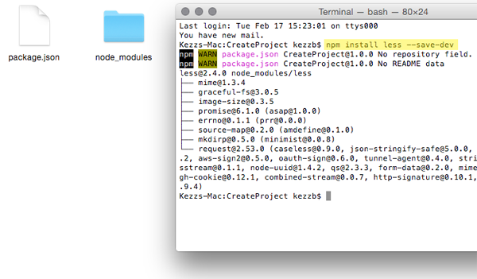
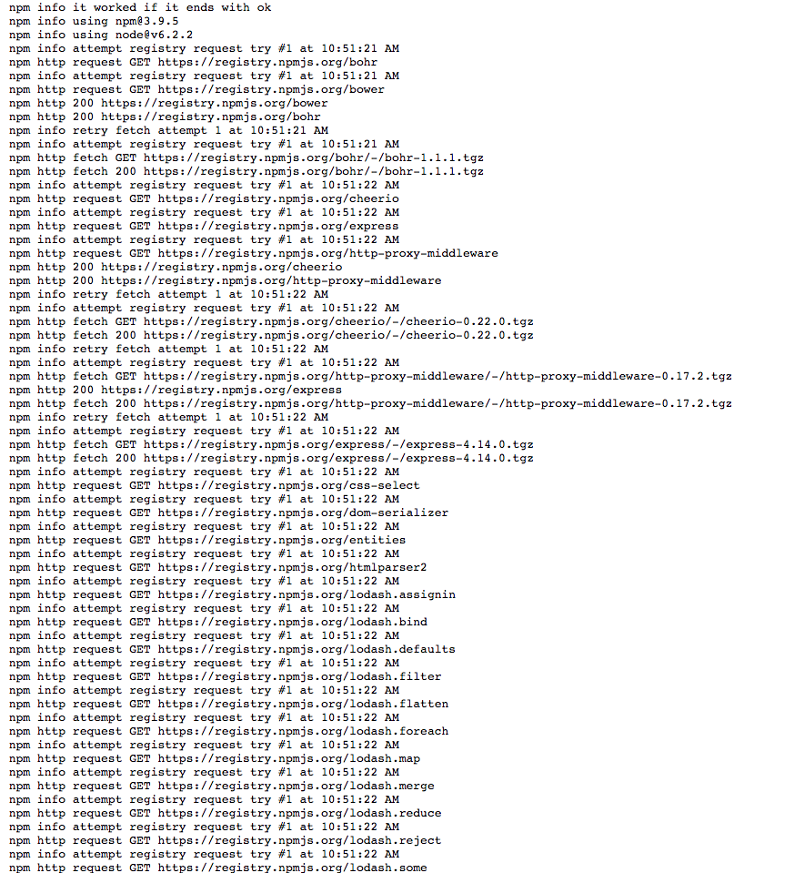
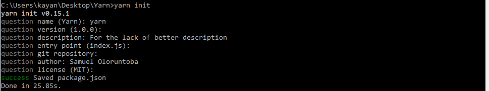
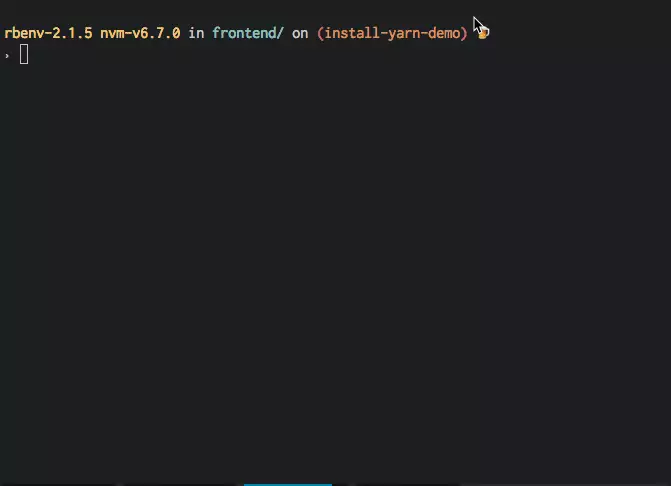
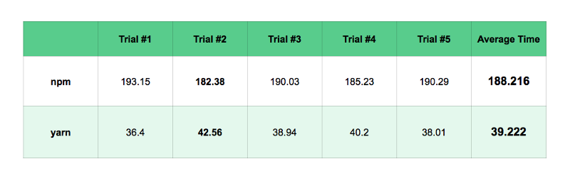
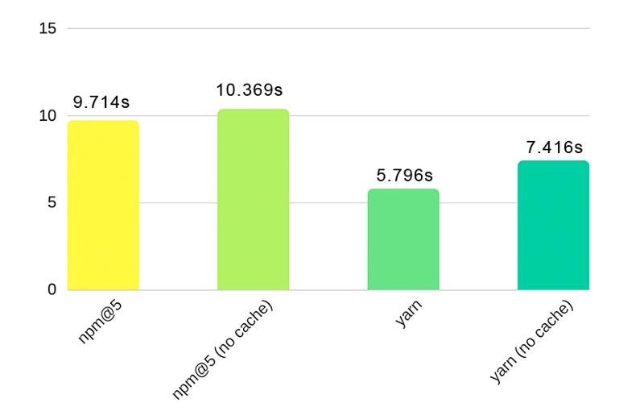

Make NPM great again!
Agustin Mulet
Frontend Developer

¿Qué es un package manager?
Herramienta que permite instalar y administrar módulos externos para proporcionar funcionalidades adicionales al sistema base.Existen dos grandes ecosistemas de módulos (tres en total), CommonJS (utilizado por NPM y Yarn) y globals/AMD (utilizado por Bower).


PROS
- Método uniforme para instalar paquetes y hacer un seguimiento de ellos.
- Popularidad: hay miles de paquetes disponibles.
-
Evita reescribir código utilizando algo funcional, que ya está listo y probado.
(en teoría)
CONTRAS
- Riesgo de encontrar documentación incompleta o incorrecta. (Módulos nuevos)
- Conflictos entre submódulos: durante la instalación de un módulo, NPM además instala cualquier otro módulo del que dependa el módulo instalado, utilizando la estructura jerárquica descrita en el archivo package.json.
Si tenés suerte...
... vs. la vida real
Yarn
Para remediar los problemas de NPM, Facebook, Google, Exponent y Tilde decidieron juntarse para crear un nuevo administrador de paquetes.
Es lanzado en Octubre de 2016 y posee la particularidad de catalogar e instalar dependencias según un esquema de versionado semántico (SEMVER) lo cual permite definir un esquema de control de versiones que refleja los tipos de cambios en cada nueva versión (por ejemplo, si una modificación rompe una API, agrega una característica o corrige un bug).
Además implementa seguridad al verificar la integridad de los paquetes instalados antes de ejecutarlos utilizando checksums.
PD: Se dice que el nombre "YARN" proviene del grito que pegó el desarrollador de Facebook después del décimo problema con las dependencias de módulos usando NPM.

La idea de Yarn no es reemplazar a NPM, sino mejorarlo.
Vanilla NPM
-
NPM < 5: El cliente de NPM instala las dependencias de una manera "no determinista": el orden de instalación de las dependencias puede variar de persona a persona. Se solucionaba utilizando npm-shinkwrap que generaba una especie de lockfile.
NPM@5: Implementa lockfiles como Yarn. - NPM sólo toma dependencias de su repositorio y las instala una a la vez, cosa que lo hace más lento.
-
NPM < 5: No permite la instalación de dependencias de forma offline.
NPM@5: Reescribieron toda la parte de caché y permite instalación offline, trabaja parecido a Yarn.
NPM + Yarn
- Gracias a lockfiles y algoritmos, Yarn permite instalar dependencias de una manera "determinista". Los lockfiles permiten que las dependencias instaladas se bloqueen a una versión específica y aseguran que cada instalación sea igual en cada máquina (ya no sirve más el "pero en mi máquina funciona").
- Yarn permite instalar dependencias en paralelo, utilizando registros de NPM y Bower.
- Permite almacenar en caché cualquier paquete ya instalado, lo que permite la instalación offline.
-
Emojis!
¿Cómo se instala?
npm install -g yarn
"NPM INSTALL YARN" = es como pedirle a tu ex que te ayude a mudar a tu novia actual 😂
¿Cómo se inicializa?
yarn init

¿Cómo integrarlo en un proyecto ya inicializado?
yarn install
Igual que antes. Yarn busca primero el archivo yarn.lock y sino el mismo package.json de Npm.
¿Cómo funciona?
-
RESOLUTION
Yarn resuelve las dependencias haciendo solicitudes a los registros y buscando cada dependencia recursivamente.
-
FETCH
Yarn comprueba en la caché global si ya se ha instalado un paquete. Si no está instalado, descarga el paquete y lo guarda en la caché.
-
LINK
Yarn copia todos los archivos que necesita de la memoria caché global en la carpeta "node_modules".
¿Cómo sé que es rápido?
Yarn vs NPM < 5Pruebas instalando diferentes paquetes
¿Cómo sé que es rápido?
Yarn vs NPM@5Pruebas instalando 1000 paquetes
Entonces...
¿Debo usar Yarn?
Vida y muerte de Bower
Bower fue creado en 2012 por Twitter, como parte de la idea de Twitter de hacerse Open Source.
Es un package manager al igual que NPM y Yarn pero orientado y optimizado para el frontend.
Como mejora a NPM, Bower se encargaba de resolver dependencias (cosa que Yarn tampoco puede hacer) pero luego de una larga charla en Github, en Octubre de 2017 decidieron depreciarlo aunque lo siguen manteniendo.
R.I.P. Bower
2012-2017
¿Cómo migrar de Bower a Yarn?
Es simple:
npm install -g bower-away
bower-away # repetir siguiendo los pasos
Usamos bower-away para resolver las dependencias de Bower y agregarlas al package.json de forma flattened porque Yarn por sí solo no puede hacerlo...
¿Cómo funciona bower-away?
Tal como dijimos, Yarn no sólo no puede resolver las dependencias sino que tampoco puede traducir los nombres de los componentes de Bower a los URLs de los repositorios.
Es ahí donde actúa bower-away y el resultado en package.json es el siguiente:
{ dependencies: { "@bower_components/almond" : "jrburke/almond#~0.2.9", "@bower_components/angular" : "angular/bower-angular#^1.0.8", "@bower_components/d3" : "mbostock-bower/d3-bower#~3.3.10" }}
Luego de esto, si instalamos el package.json con Yarn, en la carpeta node_modules/@bower_components van a estar todos los módulos de la misma forma que si hubiesen sido instalados con Bower.
Ahora resta cambiar las referencias de bower_components a node_modules/@bower_components y voilà!